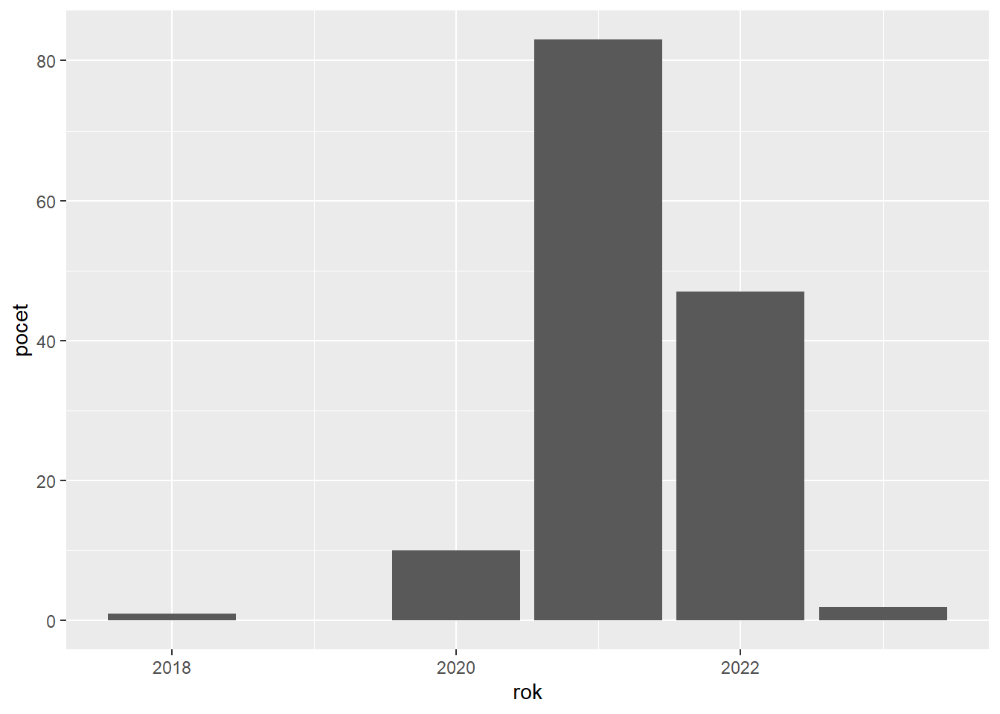

library(dplyr)
library(ggplot2)
library(knitr)
library(lubridate)Zpracování dat z Databáze léčivých přípravků
Instrukce
Z Portálu otevřených dat ČR stáhněte data konkrétně z databáze léčivých přípravků. K orientaci v uvedených datech slouží tato dokumentace. Data jsou uložena v csv souborech s fileEncoding = "CP1250".
Dle zadání zreprodukujte tabulky a grafy.
Pro udělení zápočtu je potřeba vypracovat alespoň 75 % úloh.
Výsledkem bude Quarto report (nebo R Notebook) zobrazující nejen grafy a tabulky, ale také textový popis řešení.
Výsledný dokument ve formátu html zašlete spolu se zdrojovým kódem (qmd, nebo rmd) na e-mailové adresy jiri.skvara@ujep.cz a jiri.skvor@ujep.cz.
Pro vypracování se doporučuje využití následujících knihoven:
Úkol 1
Zjistěte, kolik procent léků v databázi spadá do určité dopingové úrovně. Tabulku s výslednými daty seřaďte dle procentuálního zastoupení sestupně. Výsledná tabulka bude obsahovat kód typu závislosti, její popis/název a vypočtené procento.
| kod | NAZEV | procento |
|---|---|---|
| OOO | Přípravky obsahující složku, která může být za určitých podmínek posuzována jako doping, viz aktuální Seznam zakázaných látek a metod Světové antidopingové agentury. | 10.10 |
| S5D | Diuretika a maskovací látky (nelze pro léčbu sportovců použít vůbec). | 4.15 |
| S7 | Narkotika (zakázané pouze při soutěži). | 2.56 |
| P1 | Beta-blokátory (zakázané v určitých sportech). | 1.64 |
| S4 | Hormonové a metabolické modulátory (nelze pro léčbu sportovců použít vůbec). | 1.31 |
| S2 | Peptidové hormony, růstové faktory, příbuzné látky a mimetika (nelze pro léčbu sportovců použít vůbec). | 1.14 |
| S5 | Diuretika a maskovací látky (nelze pro léčbu sportovců použít vůbec). | 0.96 |
| S9 | Glukokortikoidy (zakázané pouze při soutěži). | 0.35 |
| S6 | Stimulancia (zakázané pouze při soutěži). | 0.25 |
| S3 | Beta-2 agonisté (nelze pro léčbu sportovců použít vůbec). | 0.19 |
| M3 | Genový a buněčný doping | 0.08 |
| S1 | Anabolické látky (nelze pro léčbu sportovců použít vůbec). | 0.08 |
| S8 | Kanabinoidy (zakázané pouze při soutěži). | 0.03 |
| M1 | Manipulace s krví a krevními komponentami | 0.00 |
Vykreslete sloupcový graf léků, které se nesmí používat při sportu (popis obsahuje klíčové slovo “sport”). Pomocí regulárních výrazů odstraňte z popisů vysvětlivky v závorkách.

Úkol 2
Zjistěte, z jakých léčivých látek se jednotlivé léky skládají. Vytvořte tabulku, která bude obsahovat identifikátor léku, název léku a pro každý lék soupis účinných látek. Hlavička výsledné tabulky by měla vypadat následovně:
| Kod | Nazev | Latky |
|---|---|---|
| 9 | ACYLCOFFIN | KYSELINA ACETYLSALICYLOVÁ |
| 9 | ACYLCOFFIN | KOFEIN |
| 113 | DILURAN | ACETAZOLAMID |
| 113 | DILURAN | MONOHYDRÁT LAKTOSY |
| 113 | DILURAN | ŽELATINA |
| 113 | DILURAN | SACHAROSA |
Zjistěte deset nejčastěji používaných látek. Do tabulky je vypište seřazené od nejpoužívanější.
| Latky | pocet |
|---|---|
| MAGNESIUM-STEARÁT | 36284 |
| MONOHYDRÁT LAKTOSY | 21094 |
| ŽLUTÝ OXID ŽELEZITÝ | 14501 |
| ŽELATINA | 11114 |
| VODA PRO INJEKCI | 9850 |
| MANNITOL | 6541 |
| ČERNÝ OXID ŽELEZITÝ | 6305 |
| CHLORID SODNÝ | 5739 |
| POVIDON K 30 | 5552 |
| PROPYLENGLYKOL | 5498 |
Úkol 3
Dle sloupce “Datum rozhodnutí pro SPC” určete kolik bylo v daném roce za Českou republiku (Země sídla držitele rozhodnutí o registraci,ZEMDRZ) vyprodukováno léčiv klasifikovaných jako psychotropní látky. Pro určení klasifikace využijte tabulku dlp_zavislost a ověřte, zda text popisu závislosti obsahuje slovo “psychotropní”.
